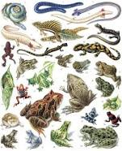

Земново́дные[1][2], или амфи́бии[1][2] (лат. Amphibia), — класс четвероногих позвоночных животных,
включающий в себя (в числе прочих) тритонов, саламандр,
лягушек и червяг и насчитывающий около 8 700[комм. 1] современных видов[комм. 2].
Земноводные обитают практически повсеместно (за исключением Антарктиды,
Северного полюса и некоторых островов). В последние десятилетия по всему миру наблюдается резкое сокращение популяций амфибий,
в основном из-за истребления людьми, разрушения среды обитания,
опасных болезней: под серьёзной угрозой исчезновения находятся более 3045 видов